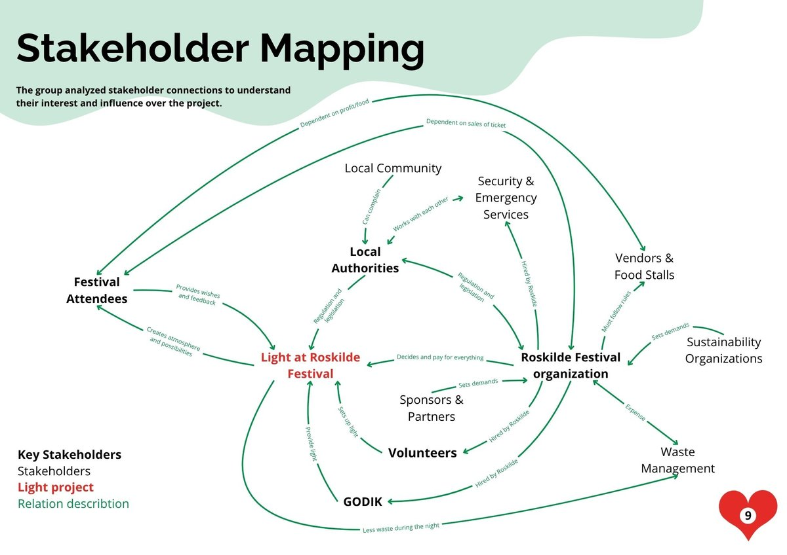
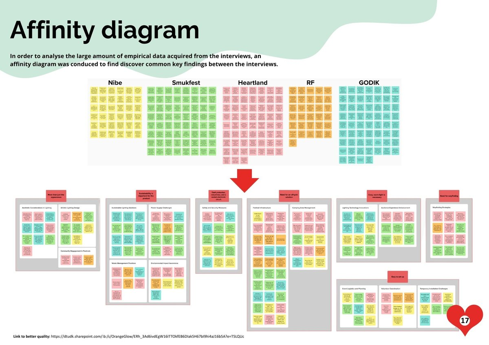
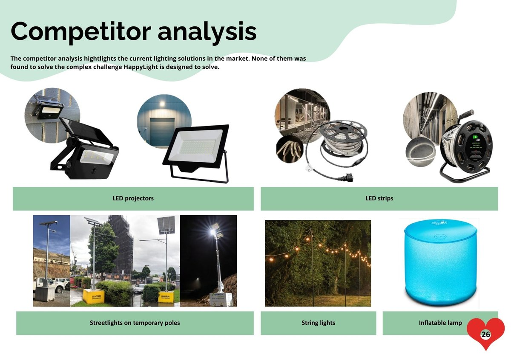
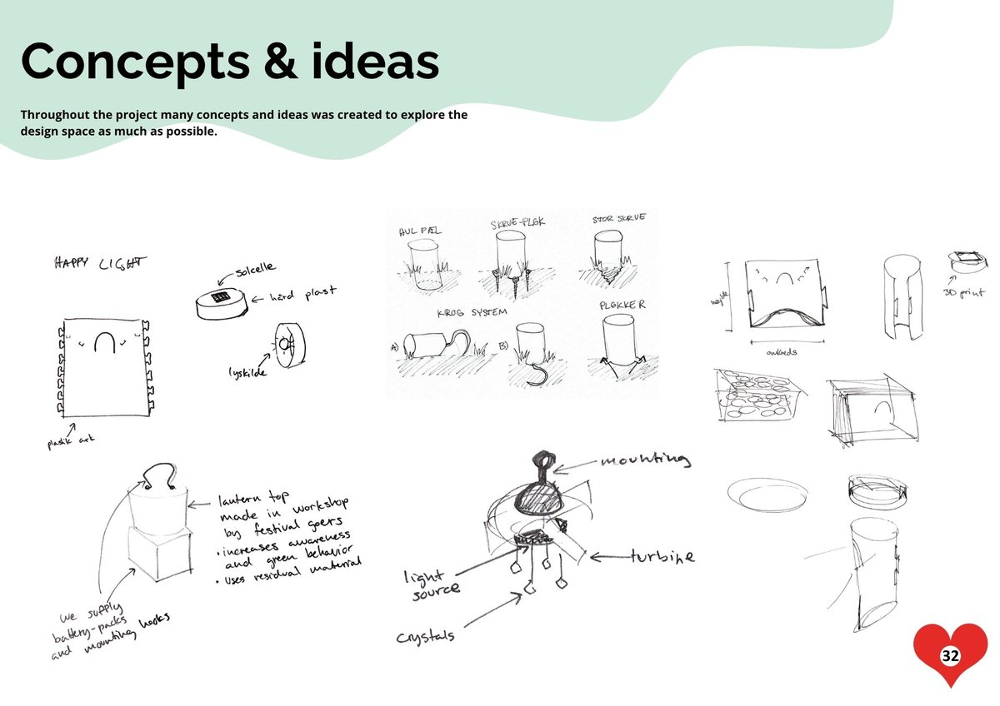
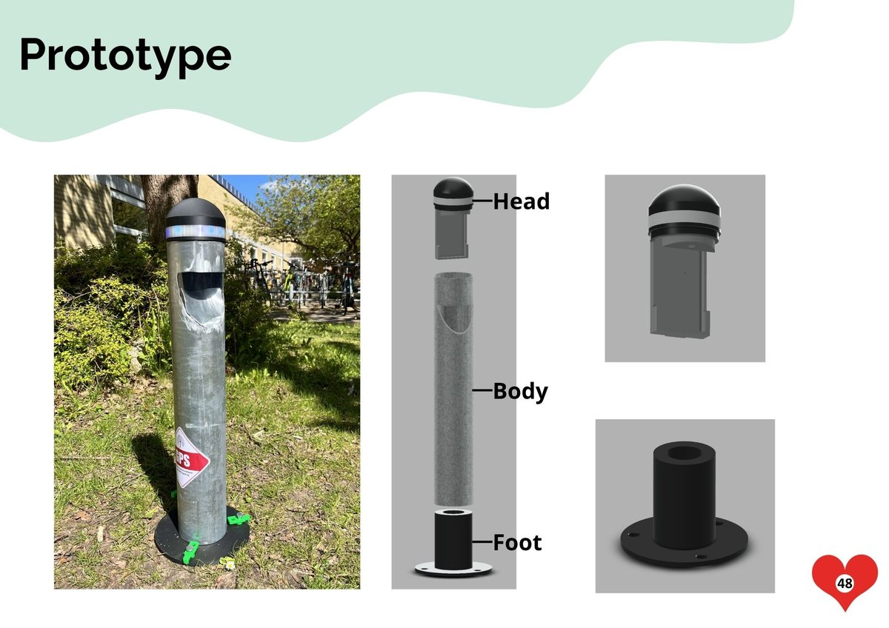

HappyLight is an off-grid, modular street lamp designed for festival campsites - developed for Roskilde Festival and equipment supplier Godik ApS as part of DTU course 41639, Holistic Design of Engineering Systems. A smile-shaped cutout casts soft, downward light while colour-coded LEDs help festivalgoers find their way home after dark.
Description
Festival campsites go dark fast, and dark makes people feel lost and unsafe - especially at Roskilde Festival, where the ground can't be dug up for permanent wiring. HappyLight answers that with a battery-powered, three-part lamp - head, body, and foot - that assembles without tools and anchors into the ground with a standard earth drill. Its body is built from repurposed zinc alloy drainage pipes, milled with a smiling cutout that both diffuses the light downward and gives the lamp its character. A warm, 3000K LED lights the ground beneath it; an RGB strip in the head glows in colour-coded zones so festivalgoers can navigate the campsite by colour, even in the dark. At roughly 65 cm tall and 10 cm across, it's sized to be visible without being a target - a deliberately unremarkable object that discourages theft and vandalism just by not standing out. I worked on this as the team's CAD designer, developing the physical form from early sketches through to the modular Head/Body/Foot assembly shown below.

Stakeholder mapping - tracing how Roskilde Festival, Godik, volunteers, and local authorities connect to the project, used to understand who the lamp needed to work for beyond just festivalgoers.

Affinity diagramming - sorting findings from interviews with Roskilde Festival, Godik, and three other festivals into recurring themes, including the need for off-grid power, warm cozy light, and theft protection.

Competitor analysis - existing lighting solutions on the market, from construction-site floodlights to string lights, none of which combined off-grid power, wayfinding, and festival atmosphere the way the brief called for.

Early concept sketches, including the first version of the smile-shaped light cutout that would carry through to the final design.

The finished prototype installed outdoors, alongside CAD renders showing its three modular parts: Head, Body, and Foot.